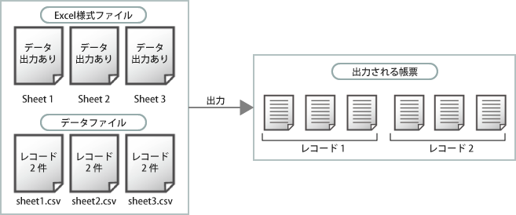
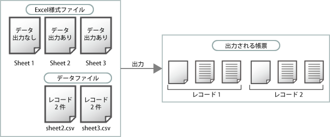

6.1. Excel様式ファイルに関するUniversal Connect/Xの設定項目
ここでは、Universal Connect/Xの設定項目のうち、XML様式ファイル使用時と設定が異なる項目、およびExcel様式ファイル使用時のみ設定する項目について説明します。XML様式ファイル使用時と共通の説明については、『Universal Connect/X管理ガイド』を参照してください。
［動作設定］－［ジョブ］
XML様式ファイル使用時と設定が異なる項目
項目 | 説明 |
|---|---|
実行様式名 | 帳票出力時に使用するExcel様式ファイル名を設定します。 ［フィールド名を参照］ダイアログからフィールド名（セルID）を選択した場合、データファイルから取得したフィールドの内容に拡張子（.xlsx）が付いたファイルが様式ファイルとして使用されます。 |
SVF ロケール | SVF関連製品で出力する場合のロケールを（VrSetLocale関数動作時のロケール）設定します。Excel様式ファイル使用時は、空白または［ja］以外のロケールを選択してジョブを実行するとエラーとなります。 |
出力モード | Excel様式ファイル使用時は、この項目の設定は無視されます。 |
文書分割 | 印刷データの文書分割をするかどうかを設定します。Excel様式ファイル固有の設定項目である［実行シート名］および［実行シート番号］は、文書分割条件に設定できません。 |
CSV 複数コマンド処理モード | Excel様式ファイル使用時は、この項目は使用できません。 |
サブ Job ID | 出力データが異なる複数のシートを含むExcel様式ファイルを使用する場合で、各シートからの出力を1つの帳票にまとめたいときに設定します。データを出力するシートごとにジョブを作成し、いずれかのジョブを親ジョブ、残りのジョブをサブジョブとして、親ジョブの［サブ Job ID］にサブジョブのJob IDを設定してください。親ジョブおよびサブジョブの並び順に関係なく、Excel様式ファイルのシートの並び順どおりに出力されます。 Excel様式ファイル使用時、サブジョブの処理では、サブジョブで設定した次の設定のみ有効となります。次の設定以外は、すべて親ジョブの設定が有効となります。
Excel様式ファイルを使用した帳票出力では、シートへのデータの出力有無に関係なく、すべてのシートが帳票に出力されます。このため、帳票の表紙など、データは出力しないが印刷だけしたいシートを含む場合、そのシートに対応するジョブは作成不要です。また、全シートのうち1シートにだけデータを出力する場合、サブジョブ自体が作成不要です。なお、サブジョブを使用する場合の出力処理の回数は、各ジョブに設定したデータファイルのうち、レコード件数が最も多いデータファイルのレコード件数となります。 設定例については、「サブジョブを使用する場合のジョブの設定例」を参照してください。 注意親ジョブとサブジョブの［実行様式名］には同じExcel様式ファイルを設定してください。異なるExcel様式ファイルを設定した場合はエラーとなります。 |
Excel様式ファイル使用時のみ設定する項目
項目 | 説明 |
|---|---|
実行シート名 | データを出力するシートを設定します。［実行シート名］と［実行シート番号］の両方を省略すると、すべてのシートに同じ値が出力されます。［実行シート名］と［実行シート番号］の両方を指定した場合、［実行シート番号］の指定は無視されます。 実行シート名を手入力で設定する場合は、設定するカラム上で左クリックをすると入力できます。 実行シート名をダイアログから設定をする場合は、設定するカラム上のセルをクリックした後、をクリックして項目を選択します。
|
実行シート番号 | データを出力するシート番号を設定します。［実行シート名］と［実行シート番号］の両方を省略すると、すべてのシートに同じ値が出力されます。［実行シート名］と［実行シート番号］の両方を指定した場合、［実行シート番号］の指定は無視されます。 実行シート番号を手入力で設定する場合は、設定するカラム上で左クリックをすると入力できます。 実行シート番号をダイアログから設定をする場合は、設定するカラム上のセルをクリックした後、をクリックして項目を選択します。
|
サブジョブを使用する場合のジョブの設定例
3シート構成のExcel様式ファイル（sample.xlsx）を使用する場合で、すべてのシートにデータを出力するとき

ジョブ
データファイル名
実行様式名
実行シート名
サブ Job ID
JOB001
sheet1.csv
sample.xlsx
Sheet 1
JOB002,JOB003
JOB002
sheet2.csv
sample.xlsx
Sheet 2
－
JOB003
sheet3.csv
sample.xlsx
Sheet 3
－
3シート構成のExcel様式ファイル（sample.xlsx）を使用する場合で、そのうちの1つにはデータを出力しないとき

ジョブ
データファイル名
実行様式名
実行シート名
サブ Job ID
JOB001
sheet2.csv
sample.xlsx
Sheet 2
JOB002
JOB002
sheet3.csv
sample.xlsx
Sheet 3
－
［置換マスター］
XML様式ファイル使用時と設定が異なる項目
項目 | 説明 |
|---|---|
実行様式名 | データとひも付けるExcel様式ファイル名が表示されます。Excel様式ファイルを変更することもできますが、ジョブ実行中にExcel様式ファイルが複数回置き換わるとエラーとなります。1つのジョブにつき1つのExcel様式ファイルが使用されるように設定してください。 |
出力モード | Excel様式ファイル使用時は、この項目の設定は無効です。 |
Excel様式ファイル使用時のみ設定する項目
項目 | 説明 |
|---|---|
実行シート名 | データを出力するシートを設定します。［実行シート名］と［実行シート番号］の両方を省略すると、すべてのシートに同じ値が出力されます。［実行シート名］と［実行シート番号］の両方を指定した場合、［実行シート番号］の指定は無視されます。 実行シート名を手入力で設定する場合は、設定するカラム上で左クリックをすると入力できます。 実行シート名をダイアログから設定をする場合は、設定するカラム上のセルをクリックした後、をクリックして表示される［シート一覧を参照］から操作します。 |
実行シート番号 | データを出力するシート番号を設定します。［実行シート名］と［実行シート番号］の両方を省略すると、すべてのシートに同じ値が出力されます。［実行シート名］と［実行シート番号］の両方を指定した場合、［実行シート番号］の指定は無視されます。 実行シート番号を手入力で設定する場合は、設定するカラム上で左クリックをすると入力できます。 実行シート番号をダイアログから設定をする場合は、設定するカラム上のセルをクリックした後、をクリックして表示される［シート一覧を参照］から操作します。 |